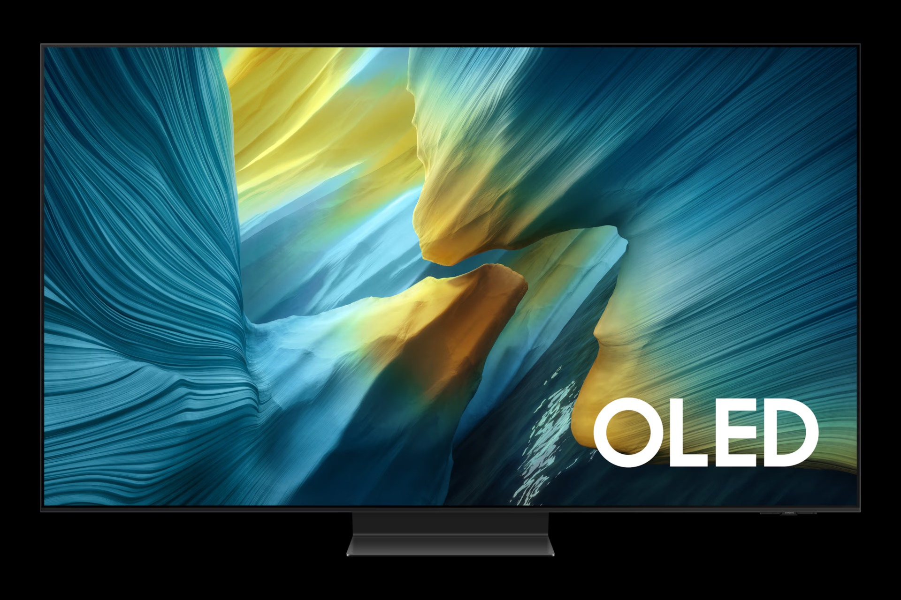
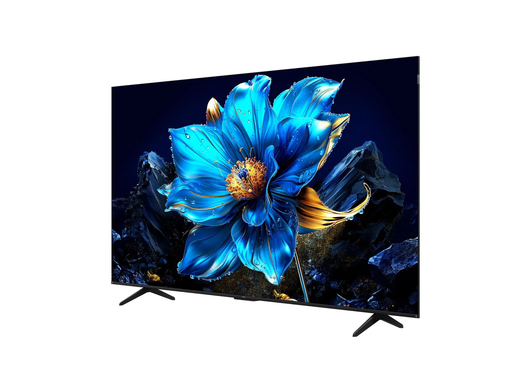

Ver fútbol en la actualidad y en especial en está época mundialista no es solo tener una gran definición (4K/8K) en nuestros televisores o tener solamente una pantalla grande. Lo que necesitamos es fluidez de movimiento y una gestión de color que no sature la imagen de forma artificial. El debate entre OLED y QLED nunca ha sido tan relevante como ahora, especialmente con las nuevas tecnologías que a continuación te enseñaré:

OLED: El Rey del Contraste y la Respuesta
La tecnología OLED que ya lleva tiempo en el mercado y por esa misma razón es la preferida para los puristas de la imagen. Ya que al no tener una fuente de luz trasera conocida como (backlight), cada píxel se apaga por completo. Lo que para un deporte cómo el fútbol le beneficia por tener un contraste infinito y un tiempo de respuesta de 0.1ms, eliminando el famoso efecto "ghosting" del balón en pases largos que hace que se pierda y no se sepá dónde ésta el balón. Sin embargo, su desventaja es que si en tu sala entra mucha luz, los picos de brillo pueden quedarse cortos haciendo que la imagén se pierda.

QLED: El Poder de la Luz
Y por otro lado tenemos la tecnología QLED, la cúal hace que las pantallas usen miles de diminutos LEDs traseros. Qué esto significa es pocas palabras, que obtienen un gran rango de brillo máximo, alcanzando hasta los 3000 nits, un valor casi comparable al de un celular de última generación cuando tiene que ver contenido bajo la luz del sol. Por lo que si vas a ver los partidos de tarde con luz natural, el QLED es la opción ganadora. Además, al ser tecnología inorgánica, el riesgo de "quemado" por tener el marcador fijo durante horas es inexistente por lo que también es una opción interesante.
Consejo Final NAMTech:
OLED: Si decides irte por un televisor con tecnología OLED, ganarás el "negro puro" y un contraste infinito que hace que cada detalle resalte con un realismo asombroso. Por lo que es la elección perfecta para quienes buscan la máxima fidelidad en entornos oscuros y un tiempo de respuesta muy rápido, garantizando una fluidez absoluta sin rastro de desenfoque en las jugadas más rápidas del campo.
QLED:Y por el otro lado si decides irte por un televisor con tecnología QLED, ganarás un nivel de brillo extremo capaz de vencer cualquier reflejo en salas muy iluminadas. Es la opción ideal para ver los partidos del Mundial de día, gracias a su durabilidad que elimina el riesgo de "quemado" de imagen, asegurando colores vibrantes y una vida útil prolongada sin degradación.